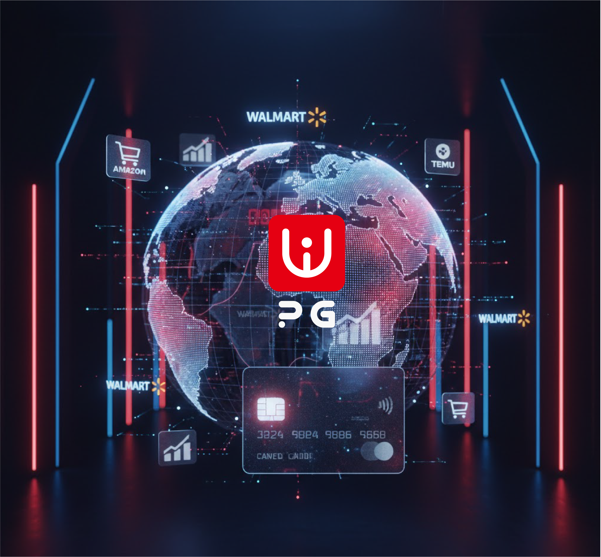
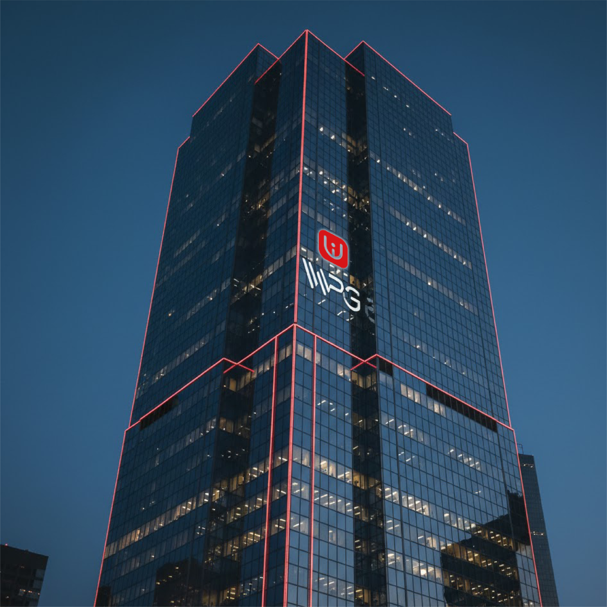

Business Matrix
以图片化布局呈现业务能力与品牌场景
在首页前段先建立品牌识别与业务感知，随后再进入企业文化简介，保持浏览节奏清晰自然。

Global Platform Operation
亚马逊、沃尔玛、TEMU多平台协同运营
针对不同平台模式与消费群体做精细化运营，兼顾流量效率、品牌塑造与合规执行， 帮助产品快速触达全球市场。
Registration Service
专业代注册服务
聚焦亚马逊平台入驻难点，覆盖资料准备、流程对接与审核跟进， 缩短注册周期，降低驳回风险。

Brand Foundation
稳定支撑的一体化品牌底座
以安全、稳定、长期可持续的服务能力支撑卖家支付、运营与管理需求， 构建跨境电商业务的基础设施。
Company Introduction
WPG公司简介
WPG深耕跨境电商全产业链，以“一体化服务赋能跨境卖家”为核心使命，整合卡台服务、平台代注册、多平台运营及产品研发四大核心板块，构建起覆盖跨境电商从基础支撑到终端销售、从产品供给到运营落地的全流程闭环服务体系，助力卖家降低准入门槛、提升运营效率、实现稳健增长，打造兼具专业性与综合性的跨境电商服务标杆。
作为WPG一体化服务的基础支撑，卡台服务聚焦跨境支付核心痛点，为各大跨境平台卖家、注册商提供安全、稳定的专属信用卡平台，坚守“永不销卡”的核心承诺，规避传统信用卡频繁销卡、使用不稳定等问题，保障跨境交易、平台注册、店铺运营等全场景支付需求顺畅落地，筑牢跨境电商运营的支付根基，同时依托合规支付架构，为用户提供安全、高效的资金结算保障，契合跨境收单的合规化、稳定化需求。
针对亚马逊平台入驻的痛点难点，WPG推出专业代注册服务，精准对接亚马逊卖家及意向入局者，凭借对亚马逊各站点注册政策、审核标准的深度解读与丰富实操经验，提供全流程代办服务，涵盖资料准备、流程对接、审核跟进等各个环节，帮助卖家规避自行注册中的资料错误、审核驳回等风险，将注册周期大幅缩短，省去大量时间成本与精力，让卖家快速完成平台入驻，高效开启跨境运营之路。
在产品运营板块，WPG聚焦全球主流跨境电商平台，打造亚马逊、沃尔玛、TEMU多平台协同运营矩阵，结合三大平台的模式差异与用户特点开展精细化运营。针对亚马逊高消费力、高品牌需求的用户群体，侧重品牌打造与精细化Listing运营；针对沃尔玛注重实用性、品牌背书的用户特点，强化产品性价比与合规运营；针对TEMU流量红利足、出单快的优势，主打高效跑量与库存优化，实现多平台优势互补、协同发力，帮助产品快速抢占全球市场，提升销量与品牌影响力。
产品研发作为WPG一体化服务的核心竞争力，紧密贴合三大运营平台的市场需求与消费者偏好，组建专业研发团队，开展市场调研、产品设计、迭代优化等全流程工作，实现“研发-运营-销售”的无缝衔接，既保障产品的市场适配性与核心竞争力，也为多平台运营提供稳定、优质的产品供给，打破“产品与运营脱节”的行业痛点，形成“研发赋能运营、运营反哺研发”的良性循环。
从支付支撑到平台入驻，从产品研发到多平台运营，WPG以一体化流程串联各核心业务，实现各板块协同联动、高效衔接，既为跨境卖家提供“一站式”全流程服务，解决卖家在运营各环节的后顾之忧，也凭借全产业链布局的优势，降低跨境运营的门槛与成本，助力各类卖家在全球跨境电商市场中实现长效发展，彰显WPG在跨境电商服务领域的专业实力与核心价值。